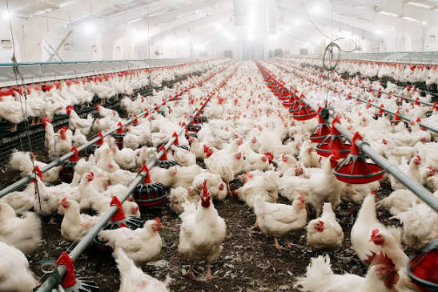

متخصص بهداشت و بیماریهای طیور
مرکز تخصصی سلامت طیور آدینه
دکتر سعید آدینهوند؛ خدمات تخصصی بهداشت و امنیت زیستی مرغداری، پیشگیری و کنترل بیماریها، واکسیناسیون و پایش سلامت و عملکرد گلههای طیور در استان اصفهان.

خدمات تخصصی سلامت گله
تمرکز خدمات آدینه بر پیشگیری، پایش و تحلیل مستمر سلامت و عملکرد گلههای طیور است.
🦠 تشخیص و کنترل بیماریها
ارزیابی علائم، تلفات، شرایط سالن و کمک به انتخاب مسیر تشخیصی مناسب.
🧑⚕️ مشاوره تخصصی مرغداری
بررسی شرایط سالن و گله و ارائه راهکار برای بهبود سلامت، مدیریت و عملکرد.
🩺 پایش سلامت گله
بررسی وضعیت بالینی، محیطی و مدیریتی گله برای شناسایی زودهنگام ریسکها.
💉 واکسیناسیون و پیشگیری
بررسی برنامههای واکسیناسیون و اقدامات پیشگیرانه متناسب با شرایط گله.
📊 تحلیل عملکرد گله
تحلیل وزن، افزایش وزن، FCR، تلفات، یکنواختی و سایر شاخصهای عملکردی.
از پایش تا بهبود عملکرد
۱. ارزیابی
بررسی وضعیت گله، سالن، علائم بالینی، مصرف آب و خوراک و دادههای عملکردی.
۲. شناسایی ریسک
مشخصکردن مهمترین عوامل سلامت، مدیریتی و محیطی مؤثر بر گله.
۳. اقدام اصلاحی
تعریف اقدامات پیشگیرانه، تشخیصی یا مدیریتی متناسب با یافتههای گله.
۴. پایش نتیجه
پیگیری تغییرات و مقایسه دادهها برای بررسی روند سلامت و عملکرد گله.
مرکز تخصصی برای چه نوع گلهای است؟
مرغ گوشتی
پایش وزن، افزایش وزن، FCR، یکنواختی، تلفات، آب و خوراک و عوامل محیطی.
مرغ تخمگذار
پایش سلامت، تولید، تلفات، واکسیناسیون و عوامل محیطی و مدیریتی.
مرغ مادر و پولت
بررسی رشد، یکنواختی، سلامت، واکسیناسیون و برنامههای پیشگیری.
بیماریهای طیور
بررسی علائم، تلفات، شرایط سالن و انتخاب آزمایشهای تشخیصی مانند PCR و ELISA.
دامپزشکی طیور و مدیریت مرغداری
تمرکز این مرکز با دامپزشکی عمومی حیوانات خانگی یا درمان دام بزرگ متفاوت است. موضوع اصلی خدمات، گلههای طیور و مسائل مرتبط با سلامت، بهداشت، بیماری و عملکرد مرغداری است. برای مسئلههای عملکردی نیز دادههایی مانند وزن، افزایش وزن، FCR، تلفات، یکنواختی، مصرف آب و خوراک و شاخصهای عملکردی میتوانند در کنار ارزیابی بالینی و مدیریتی بررسی شوند.
خدمات دامپزشک مرغداری · دامپزشکی تخصصی طیور در اصفهان · اپلیکیشن و سامانه مدیریت مرغداری
موقعیت و تماس
شاهینشهر، ورودی گرگاب، میدان، استان اصفهان